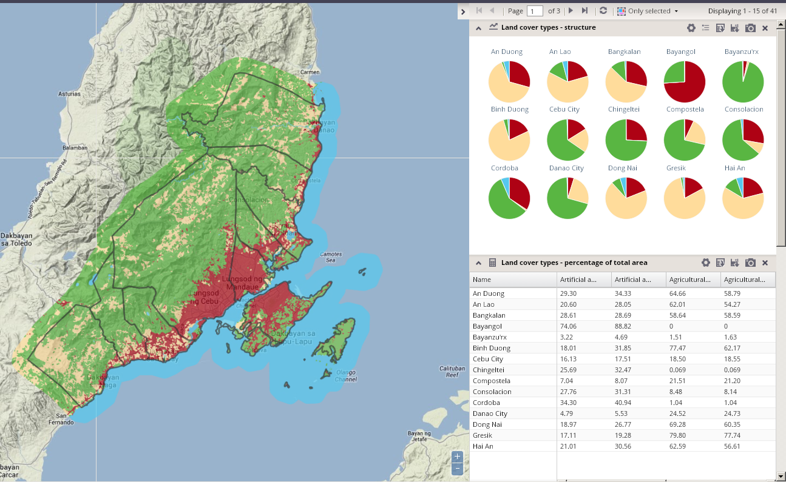
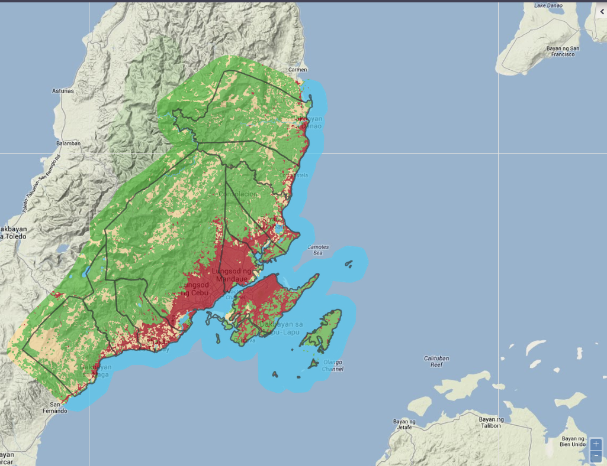
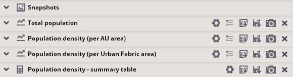

Setting the chart panel content
The chart panel is designed for visualization of incorporated data via various types of charts. This kind of graphical representation of statistical values is the most easily understandable way to present statistical values.
The chart panel is expanded by default; it can be hidden to enlarge the map window and expanded again using the expand/collapse buttons at the top of the chart panel.
Application windows with expanded/hidden chart panels are displayed in the picture below.
 
The following types of charts are available for presentation of data values in the chart panel:
There are also incorporated two non-chart visualization possibilities:
You can modify the appearance of the chart panel by adding , reconfiguring or removing charts.
Each chart in the panel can be expanded or collapsed via the hide/expand buttons located in the upper right corner of the header of each chart.

There is also a possibility to export content of each chart: either as graphics or as tabular data.